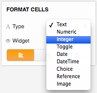

Columns and data types#
Overview#
Grist columns have types, similar to other spreadsheets or databases, but with a few differences:
- Columns allow you to enter any value, regardless of their type.
If a value entered is incompatible with the defined type, the cell will be highlighted with an
error and columns referencing the invalid value will also display an error:

Specifying a type#
The default type for value columns is Text. You can change the column type in Field Options
in the Sidepane:
In the column menu drop-down, select Field options:

Then, in the sidebar menu, use the type drop-down to select the appropriate type:

Supported types#
Grist supports the following types:
| Type | Description |
|---|---|
| Text | (Default) Any string of text. |
| Numeric | Floating point numbers. |
| Integer | Integers (whole numbers). |
| Toggle | Boolean (True / False) |
| Date | Valid date (without a time component). |
| Datetime | Valid date + time. |
| Choice | List of pre-defined valid values. |
| Reference | A reference column to another table. |
| Image | Exactly what it sounds like. |